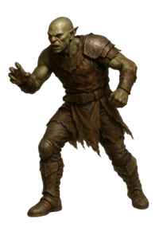

Bardh
Sindarin Crash Course by Rínor
Contents

Adjectives describe nouns or pronouns. Adverbs can describe an action, give its time or place, or modify an adjective. Sindarin adjectives usually follow the noun they describe and undergo soft mutation in that relationship.
First ask what the describing word is doing. A description inside a noun phrase, a statement about the subject, and a description of an action are different constructions.
| Use | English pattern | How to read it |
|---|---|---|
| Attributive adjective | the strong elf | Describes the noun within one phrase. The adjective normally follows its noun and agrees in number. |
| Predicate adjective | the elf is strong | Makes a statement about the subject. Sindarin can omit the linking verb. See the predicate-mutation discussion below. |
| Adverbial use | the elf runs swiftly | Describes the action. Placement and the surrounding phrase help establish its role. |
Mutation can give you a clue, but it does not identify the construction by itself. Some initials do not visibly change, so a phrase that looks ambiguous on its own may become clear from context. See Eldamo on adjective syntax.
The examples below use these adjectives and adverbs:
Adjectives usually come after the noun they modify. Adverbs have more freedom of placement. Compare these examples:
Sindarin adjectives inflect for number to agree with their noun: en-Edhel thalion “The strong elf” → in-Edhil thelyn “The strong elves”. More examples:
Plural formation and initial mutation are separate changes. Choose the appropriate plural adjective, then apply the mutation required by its relationship to the noun. A plural noun does not make its adjective take nasal mutation simply because the noun is plural. Some singular and plural forms look alike.
When several ordinary adjectives describe the same noun, Strack's reading of PE23 applies the noun's mutation to the first adjective. A later adjective may still mutate because of a conjunction or another local trigger.
Schematic order: noun + adjective 1, adjective 2, conjunction + adjective 3. The labels show each word's job, not Sindarin translations.
See Paul Strack's Soft Mutation in Sindarin Grammar, discussing PE23/143. Compare coordinated objects and the separate discussion of possessives and adjectives.
When an ordinary adjective comes before its noun, Strack recommends soft mutation of the noun. We have few examples of this unusual order. See his discussion of nouns following adjectives.
| Construction | Schematic order | English meaning |
|---|---|---|
| Ordinary descriptive phrase | noun + adjective | “a bright star” |
| Descriptive phrase with unusual order | adjective + noun | “a bright star” |
| Predicate-first statement | adjective + subject | “bright is the star” |
In the second row, the adjective helps identify a noun. In the third, it says something about the subject. Position alone does not decide between them. Read the construction alongside my copular-mutation preference.
My liquid mutation after ail, il, and er remains a separate quantity-word convention. A compound or established name also needs its own analysis.
A copula is a linking verb such as English “is” or “are”. Sindarin often places the subject and its description together without an expressed linking verb. This is called a zero copula. A description can also come first.
An independent pronoun can supply the subject:
The linking verb can be omitted, and predicate adjectives agree with their subjects in number. The description can also precede the subject. When the description comes first, it is no longer in the subject following position illustrated by my lenited examples above.
These examples illustrate the alternative convention of leaving a predicate unmutated after its subject. They are included so readers can recognize that approach in other learning materials. My preferred lenited pattern is shown above.
Paul Strack proposes nî and tho for past and future linking constructions. The full system is reconstructed; these are not securely attested paradigms that every Sindarin sentence must use. Context may also establish time.
See the evidence and reconstruction discussion in Eldamo's copula entry.
Other examples:
The same construction can be used to equate two nouns, as well as nouns modified by adjectives:
English “there” has two different jobs. It can point to a place, or introduce a statement that something exists or is present.
| English example | Role of “there” | What the statement establishes |
|---|---|---|
| The house is there. | Location | Where an identified house is. |
| There is a house. | Existential introduction | The existence or presence of a house. |
Ellanto pointed out this distinction several times in my earlier translation discussions. Locational ennas does not automatically perform the introductory job of English “there is”.
In this course, I may express the intended meaning with a location phrase, a predicate without an expressed linking verb, or another verb that carries the needed meaning. Whatever construction is used, it still needs to preserve who or what is involved, the location, and the intended time. Simply placing several nouns together does not necessarily create a complete statement.
The form dha has been interpreted as existential, but its analysis remains uncertain and the evidence does not supply a secure past-tense paradigm. See Eldamo's copula discussion. This question is separate from my preference for lenited copular predicates.
A predicate adjective describes the subject: in English “the sky becomes dark”, “dark” describes the sky. It is not a thing acted upon. Compare the discussion of verb meanings and objects.
Tolkien's 1969 discussion places adjectives after verbs meaning “seem”, “appear”, or “become” in a soft-mutation environment. See Strack's account of PE23/142.
This construction has an expressed verb. My preference for lenited predicates in statements without an expressed copula still applies in its own setting. The English examples here only show the grammatical relationship. You still need to determine which Sindarin verb and construction are appropriate.
An adverb can describe an action or give its time or place. In this example it follows the verb: i·edhel lôr anuir. “The elf sleeps forever.” The adverb may appear elsewhere in the sentence, however:
Mutation of an adverb and mutation caused by an adverb are separate questions. The evidence does not establish a universal rule that every adverb must lenite a following verb. See Eldamo on adverbs.
This community proposal explores whether stress and attachment to a verb help explain the contrasting forms. It is an interpretation of the evidence, not an established rule for every adverb. The note is reproduced below:
A Note from Ellanto on VL: An interesting thought occurred to me today, regarding the seemingly contradicting examples of edro hi ammen and le nallon sí di'nguruthos. Various explanations have been proposed and discussed, usually leading to a SI vs. KHI distinction, but I believe the two forms can be neatly explained with just SI as well.
Note that in the first example the adverb in question is given with a short vowel + lenition, whereas in the second example it is given with a long vowel and without lenition; note also that in Sam's invocation sí is in a metrically stressed position. I propose that in Gandalf's incantation (and in normal speech when the adverb is not especially emphasised) the adverb (if monosyllabic, at any rate) encliticises to the verb and its vowel reduces. Such situations will also call for lenition, since the adverb adjoins to the preceding prosodic word - Sindarin mutations all originally arose as sandhi phenomena within prosodic phrases. In Sam's invocation sí is metrically stressed and pragmatically emphasised, leading to the retention of the long vowel, as well as its removal from the preceding prosodic phrase, blocking lenition.
Also of interest to this theory is Tolkien's mention of "unstressed ... adverbial particles (mainly monosyllabic)" in PE23/143.
An adverb can also come before an adjective and form a close phrase with it. In that relationship, the adjective can be lenited by the adverb. If the whole adverb + adjective phrase then describes a noun, any mutation at the beginning of that larger phrase is a separate issue. Megil vae·vell. “A well-loved sword.” or Mae vell e·Vegil. “The sword [is] well loved.” In my spelling, the middle dot shows the close connection between the adverb and adjective.
Sindarin can also use an adjective in an adverb-like way when the quality describes the subject while it performs the action. en·Orch nôr lim. “The orc is running swift (= swiftly)”. This is subtly different from en·Orch lim nôr. “The swift orc is running”. These examples contrast describing the action with describing the noun. Another ordering shown in this lesson is Nôr en·Orch lim.
An adjective used this way must suit the subject as well as the action. A statement about duration or another relationship may instead need a prepositional expression. There is no general instruction to turn every English adverb into a Sindarin adjective.
Intensity, comparison, and superlatives do different jobs. The table below separates those meanings using one proposed Neo-Sindarin system.
| Meaning | English illustration | A Neo-Sindarin proposal |
|---|---|---|
| Intensive | very strong | The prefix an-, with nasal mutation in the proposed system, can intensify an adjective. |
| Comparative | stronger than someone | A construction using athan/athar “beyond” compares referents. An intensive prefix can strengthen the comparison. |
| Superlative | strongest in a group | Eldamo recommends ro- with soft mutation for a superlative reading. |
These are modern proposals built from limited evidence, not a fully attested comparison paradigm. See Eldamo's comparison discussion. The comparison prefix an- is distinct from dative an; this proposal does not change my mixed-mutation convention for dative pronouns.
These details explain some choices you will see in my examples:
Established names can preserve choices from different stages of Tolkien's writing. A name that differs from a lesson pattern is not automatically an error, and it does not by itself establish a productive rule for new phrases.
In Adjectival Mutations in Sindarin, Paul Strack compares names such as Fen Hollen and Imloth Melui with Tolkien's later explanations. He proposes that regular adjective mutation after nouns may have lapsed during the 1940s and early 1950s, before returning in later writing. That chronology is Strack's historical hypothesis.
The essay also discusses revised etymologies and Tolkien's late allowance for unchanged initial m-. So an apparently unmutated form can have more than one historical explanation. Read each name with its source history, while following the stated course conventions in these lessons.
The practice checks the lesson's stored answers. Use the vowel marks and ñ where shown. Capitalization, punctuation, and article joining are accepted flexibly.